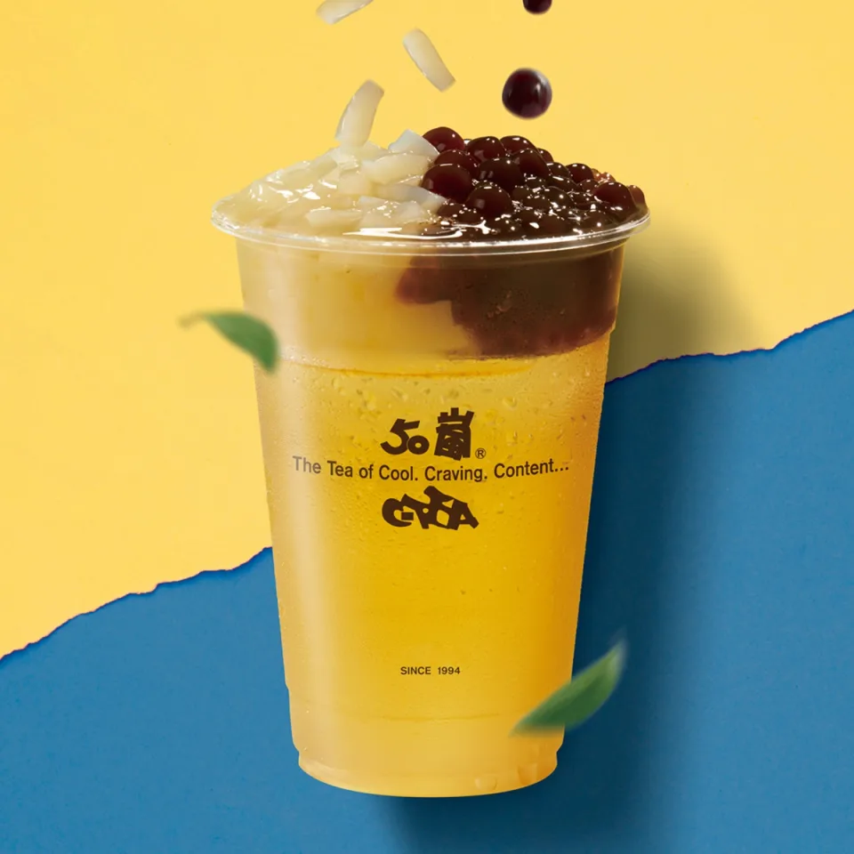
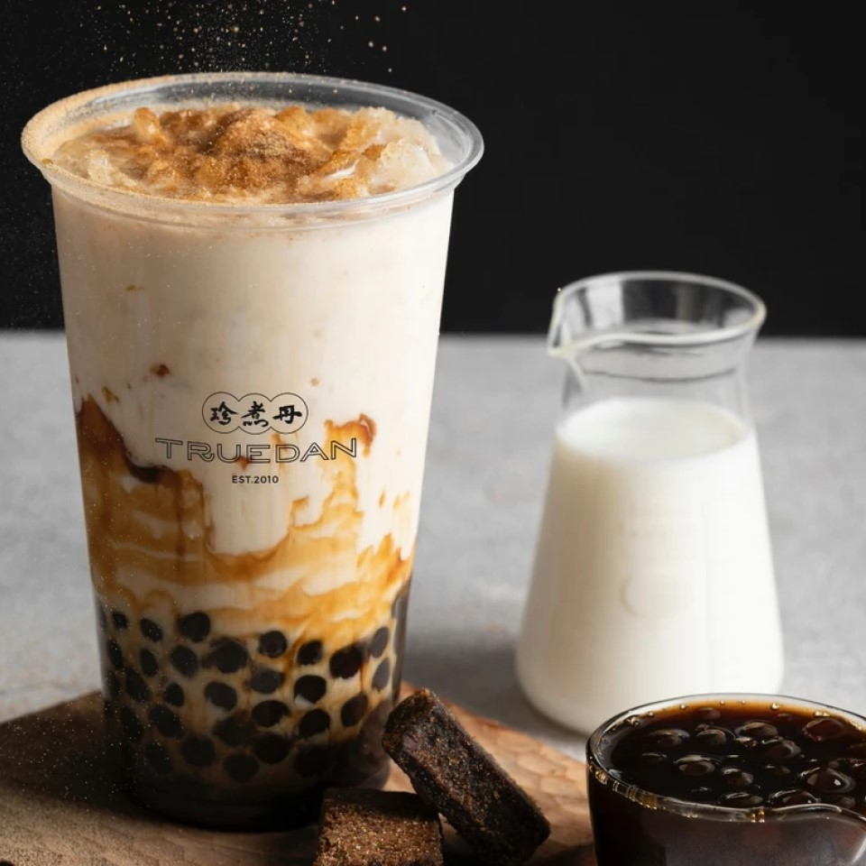
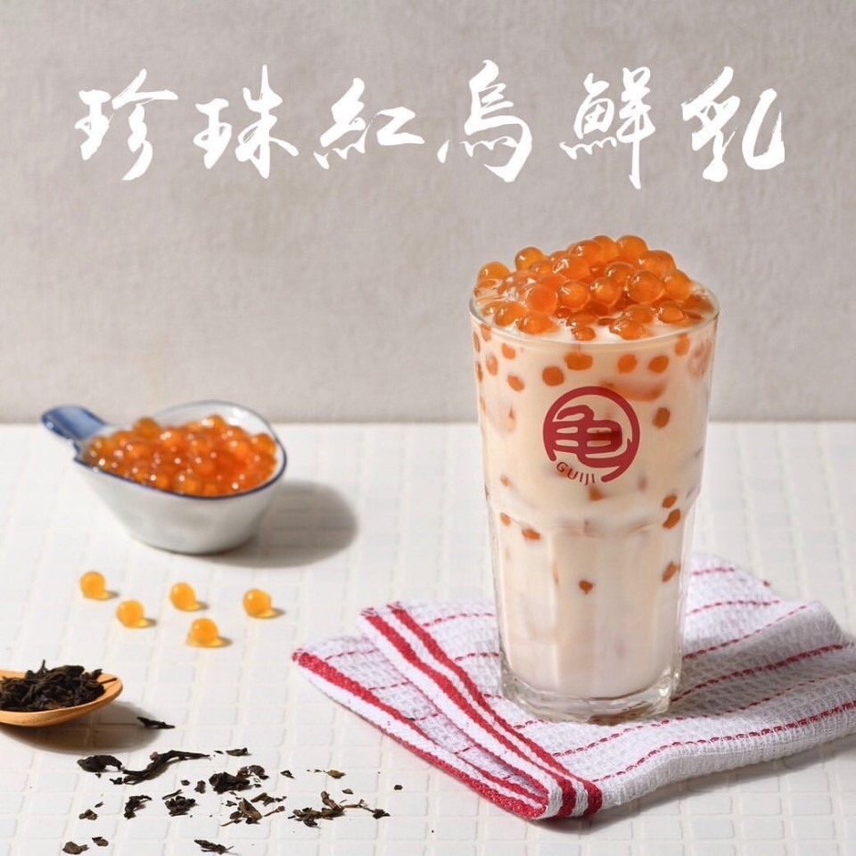
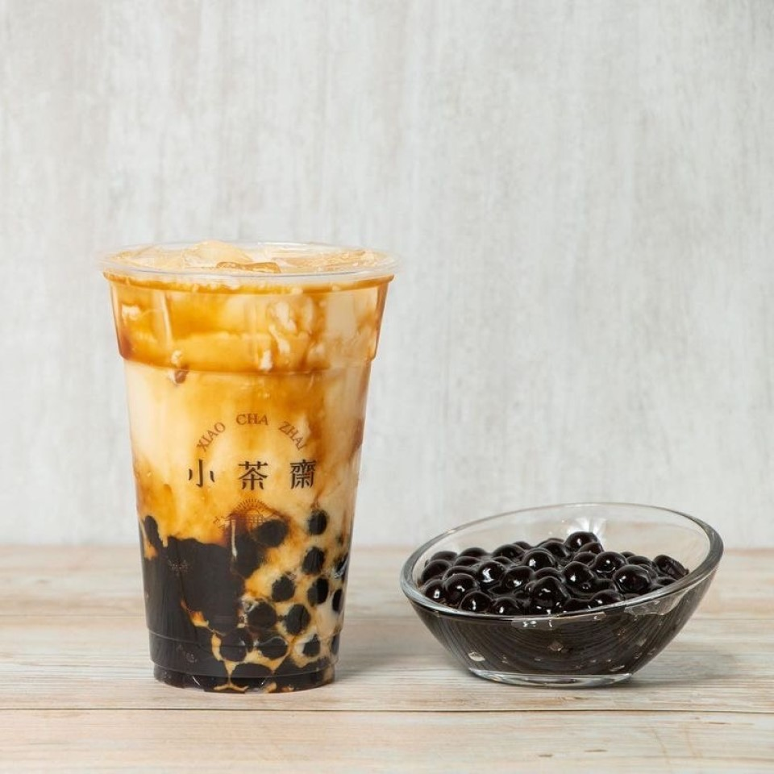
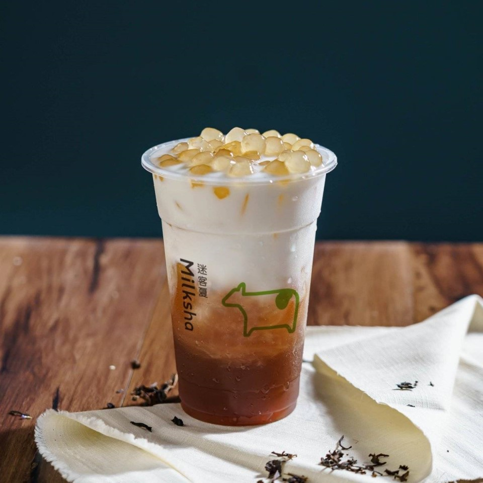
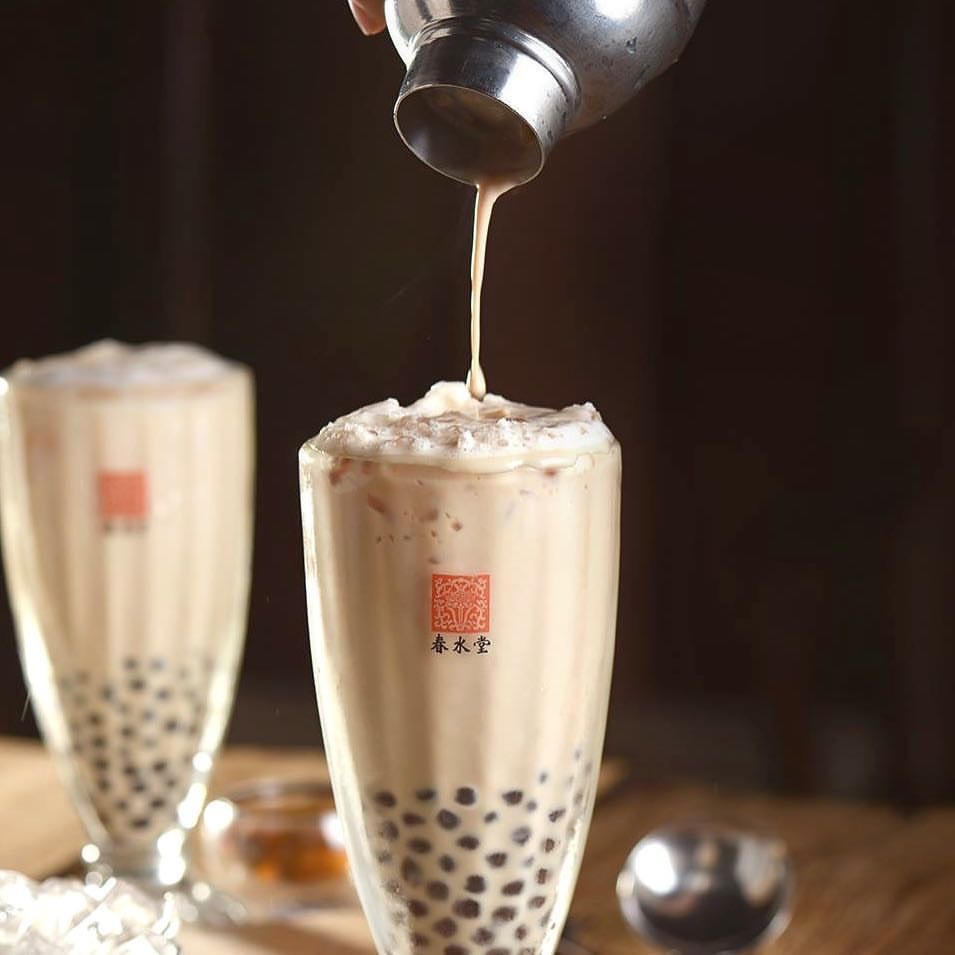

- 首頁
- 喝口感
- 喝珍珠
喝口感
今天喝什麼?
以下是珍珠控不能錯過的手搖飲!!

×

50嵐-1號珍波椰青茶
有著四季春的清香，大方搭配爽脆椰果、Q彈珍珠、飽滿波霸，口感超豐富，重點是高CP值，一舉擄獲咀嚼控!

×

珍煮丹-黑糖珍珠鮮奶
「黑糖珍珠鮮奶」是珍煮丹的招牌飲品！黑糖珍珠採每日現做，0.85 公分嚼勁十足，搭配嚴選小農鮮奶，奶香與黑糖香交融，令人感到滿滿的幸福。

×

龜記Guiji-珍珠紅烏鮮乳
獨家的黃金珍珠,那一顆顆晶瑩剔透的珍珠,口感彈有勁,還略帶點蜂蜜香,讓整杯紅烏鮮乳,喝起來更加有層次,適合喜歡咀嚼珍珠的你!

×

小茶齋-岩漿珍珠鮮奶
手炒黑糖與鮮乳，搭配蜜糖Q珍珠，喝起來是非常的順口。另款，「厚漿珍珠鮮奶」裡面多加了「鮮奶油」，喝起來甜度和奶味都會比起「岩漿」濃厚一點喲。

×

迷客夏Miiksha-珍珠紅茶拿鐵
珍珠是使用蜂蜜蜜漬的白玉珍珠，門市每天熬煮備製，經過多次冷水降溫，像幫珍珠做三溫暖，創造出Q彈口感的白玉珍珠

×

春水堂-珍珠奶茶
春水堂的小顆黑珍珠以樹薯粉全程低溫製成，不添加防腐劑，用零反式脂肪奶精調合，小巧Q彈的口感和濃郁茶香的奶茶融合，好喝得無法罷手。